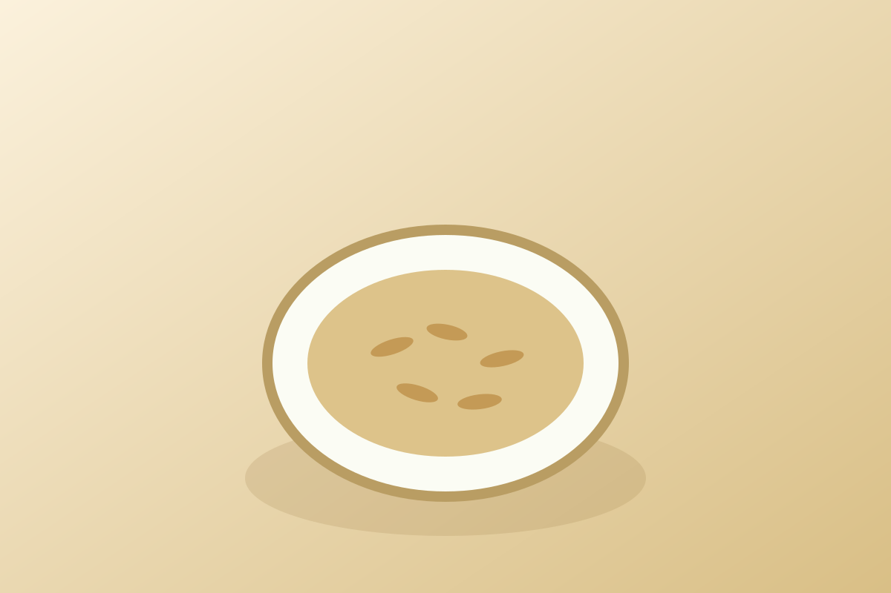

Oats
Quick answer
Oats contain beta-glucan, a soluble fiber that has been extensively studied for its effects on cholesterol, blood sugar regulation, and immune modulation. They also provide avenanthramides, polyphenol compounds unique to oats with demonstrated antioxidant and anti-inflammatory properties.
What it is
Oats (Avena sativa) are a cereal grain grown in temperate climates worldwide. They are available as steel-cut (Irish), rolled (old-fashioned), quick, and instant oats, as well as oat flour, oat milk, and oat bran. Scotland, Russia, and Canada are among the largest producers.
Oats have been cultivated for over 3,000 years and are a breakfast staple in many cultures. They are used in porridge, overnight oats, granola, baking, and increasingly in plant-based milk alternatives. Oats are naturally gluten-free but are often processed in facilities that handle wheat.
Why oats may support an anti-inflammatory diet
Beta-glucan is a soluble fiber that forms a viscous gel in the digestive tract. This gel slows glucose absorption and binds bile acids, which is the mechanism behind oats' well-documented cholesterol-lowering effect. Beta-glucan also acts as a prebiotic, feeding beneficial gut bacteria that produce anti-inflammatory short-chain fatty acids.
Avenanthramides are polyphenols found exclusively in oats. Research has shown that avenanthramides can inhibit NF-kB activation and reduce the production of pro-inflammatory cytokines and adhesion molecules in endothelial cells. They also have antioxidant activity approximately 10-30 times greater than other common phenolic compounds in oats.
Key nutrients and compounds
A 40g serving of dry rolled oats provides approximately 5g protein, 4g beta-glucan fiber, 27g carbohydrates, 1.5mg iron (8% DV), 0.6mg manganese (26% DV), 44mg magnesium (11% DV), and 1.5mg zinc (14% DV). Oats also contain B vitamins including thiamin and folate.
Potential health benefits
- Contains beta-glucan fiber with FDA-recognized cholesterol-lowering benefits
- Provides avenanthramides, unique anti-inflammatory polyphenols
- Supports stable blood sugar through slow-digesting complex carbohydrates
- Acts as a prebiotic supporting beneficial gut bacteria
- Versatile base food that pairs naturally with berries, nuts, and seeds
How to eat oats
- Make overnight oats with rolled oats, chia seeds, plant milk, and berries
- Cook steel-cut oats on weekends and reheat portions throughout the week
- Blend oats into smoothies for added fiber and creaminess
- Use oat flour in baking as a partial replacement for refined flour
- Make savory oatmeal with a fried egg, avocado, and hot sauce
- Prepare homemade granola with oats, nuts, seeds, and a light honey drizzle
Shopping and storage
Choose minimally processed steel-cut or rolled oats over instant varieties, which may have added sugar. If you have celiac disease, look for certified gluten-free oats. Store in an airtight container in a cool, dry place for up to 12 months.
FAQ
Are steel-cut oats healthier than rolled oats?
Steel-cut oats have a slightly lower glycemic index due to less processing, but the nutritional differences are minimal. Both provide similar amounts of beta-glucan and avenanthramides. Choose based on texture preference and cooking time.
Can oats help lower cholesterol?
Yes. The FDA allows a health claim that 3g of beta-glucan per day from oats may reduce cholesterol. This requires about 1.5 cups of cooked oatmeal daily. The effect is modest but well-documented in clinical trials.
Are oats gluten-free?
Oats are naturally gluten-free but are frequently contaminated with wheat during processing. People with celiac disease should choose certified gluten-free oats. Most people with gluten sensitivity tolerate pure oats well.
Is instant oatmeal still nutritious?
Plain instant oats retain most of their beta-glucan and nutrients. However, flavored instant oatmeal packets often contain significant added sugar. Choose plain instant oats and add your own toppings for the best nutritional profile.
Evidence note
Oat beta-glucan is one of the most well-studied dietary fibers, with dozens of clinical trials supporting its cholesterol-lowering effects. Research on avenanthramides is newer but promising, with in vitro and small human studies showing antioxidant and anti-inflammatory activity.
This page describes oats as a supportive food within a broader anti-inflammatory eating pattern, not as a standalone medical treatment.